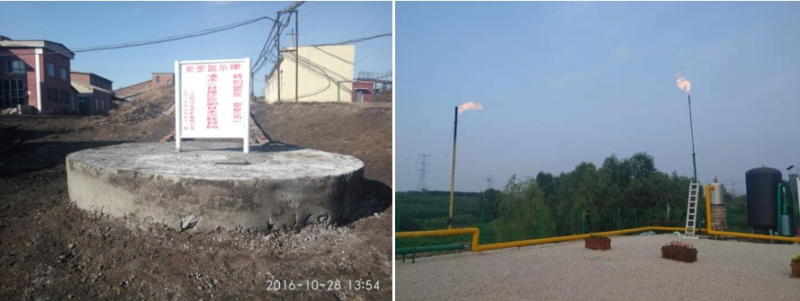

China Coal Information Institute: AMM Development Pilot Project in the Shenbei Coalfield

The China Coal Information Institute (CCII) and the Liaoning Hongyang Coalbed Methane Clean Energy Development Company, Ltd. are implementing an abandoned mine methane (AMM) development pilot project at the Shenbei Coalfield in the Liaoning Province.
Assessing Results from the Pilot Project
The AMM pilot project consists of two abandoned coal mines at the Shenbei Coalfield in the Shenyang Mining Area that were separately closed in 2003 and in 2016. The pilot project contains 106 million tons of remaining coal resources and a large volume of coal mine methane (CMM). The total volume of gas resources is estimated to be 466 million m3 based on the mines’ ventilation emissions and gas drainage volumes when operating.
The project’s gas development plan specifies the drilling of 18 wells from the surface to intersect sealed gob and residual coal pillar (or stratum re-compaction) areas. Five pilot wells were drilled between 2017-2019. The pilot wells confirmed maximum casing pressure of 0.9 megapascal (MPa) (130 psi or 9 bar). The test production of one well was completed in 2017, yielding a methane concentration of 91.46%, a casing pressure of 0.005 MPa during the blowout prevention period, and a production rate of 2300-2700 m3/d. The test production of a second well was completed in 2018, yielding a methane concentration of 96.74%, a closed casing pressure of 0.9 MPa, a casing pressure of 0.1 MPa during the blowout prevention period, and a production rate of 2000 m3/d. These results indicate that the abandoned coal mines of the Shenbei Coalfield have a good sealing property and that the cover coat of overlying rock on the coal seams is in good condition with strong compactness.
Next Steps and Initial Project Results
Based on the results of the pilot project, the CMM in these abandoned coal mines was determined to be recoverable. The next steps in the project are to complete the drilling of the remaining 13 wells to bring them into production, followed by expanding the existing gas drainage system. The drained gas from the mines will be transported through a surface pipeline network to supply multiple 5 MW gas gensets to produce power and for waste heat utilization. The waste heat produced will be used to provide hot water for civil and industrial uses in the Shenbei region.
The total volume of AMM utilized under this project is expected to reach 64.5 million m3, with an average annual methane emission reduction volume of up to 6.5 million m3/year and an annual carbon dioxide emission reduction of 103.5 thousand tons.